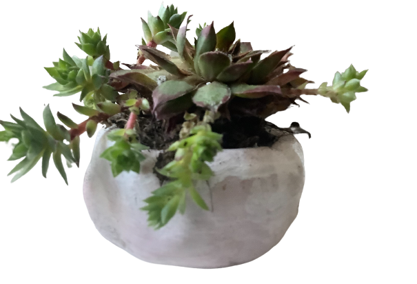
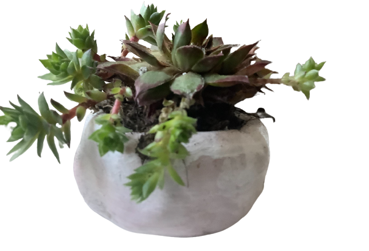

Why succulents?
The reason why you should buy our superb succulents are because that we make them with beautiful designs and because succulents do not need so much water, so they last without water for longer.
What our product contains
Our ceramic version is clay molded to make beautiful designs. We have a cube pot, triple pot, coil pot, and more for the ceramic versions. We also paint the ceramic pots so that they can be beautiful and admired by everyone. Our Deluxe Pot contains colored sand around the succulent to make beautiful patterns everyone will love. We have the succulent in a foil pot so that the sand and soil to not mix together and harm the succulent, so do not worry. We have a glass pot around the colored sand so that these fantastic patterns can be seen and admired.


Clay Pot - $7.00
Small Deluxe Pot - $10.00
Large Deluxe Pot - $12.00
Care tips
- Do NOT overwater these succulents or else the soil will get too moist and the succulent will die
- When watering the Deluxe Especial (if you want, you can do it with the clay version too), use a syringe with a pointed tip and direct the water near the succulent roots
- Rotate your succulent pot frrequently so that not just one side of the succulent gets light (and make sure to have it in the light!)
- Keep the succulents clean by using a thin brush and brush the leaves because succulents pick up dust from the floor and it will inhibit their growth
- (Optional) Use a moisture/water meter to check if you need to water the succulent (watering about 1-2 times a week should be fine) or if it has too much water in it (succulents are at about a 3 on the moisture meter)

Care tips
- Do NOT overwater these succulents or else the soil will get too moist and the succulent will die
- When watering the Deluxe Especial (if you want, you can do it with the clay version too), use a syringe with a pointed tip and direct the water near the succulent roots
- Rotate your succulent pot frrequently so that not just one side of the succulent gets light (and make sure to have it in the light!)
- Keep the succulents clean by using a thin brush and brush the leaves because succulents pick up dust from the floor and it will inhibit their growth
- (Optional) Use a moisture/water meter to check if you need to water the succulent (watering about 1-2 times a week should be fine) or if it has too much water in it (succulents are at about a 3 on the moisture meter)
- When watering the Deluxe Especial (if you want, you can do it with the clay version too), use a syringe with a pointed tip and direct the water near the succulent roots
- Rotate your succulent pot frrequently so that not just one side of the succulent gets light (and make sure to have it in the light!)
- Keep the succulents clean by using a thin brush and brush the leaves because succulents pick up dust from the floor and it will inhibit their growth
- (Optional) Use a moisture/water meter to check if you need to water the succulent (watering about 1-2 times a week should be fine) or if it has too much water in it (succulents are at about a 3 on the moisture meter)